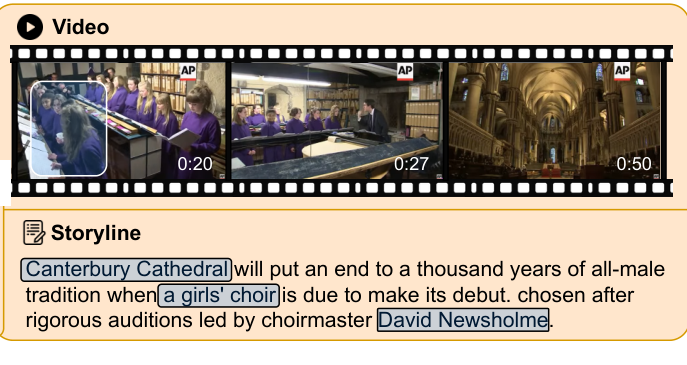

About
Third-year Ph.D. student in Computer Science at Virginia Tech, working with Dr. Chris Thomas on video-language understanding and cross-modal reasoning. Previously M.Sc. at George Washington University.
Research Interests
Vision-Language Models
Multimodal Reasoning
Cross-Modal Retrieval
Information Extraction
News
Sep '26Joined Amazon as a PhD Applied Scientist Intern · Fall 2026
Aug '262 papers (NEST, M3EC) accepted to EMNLP 2026 · Main
May '26Joined Amazon as a PhD Applied Scientist Intern · Summer 2026
Apr '26Received the Cyber Innovation Scholar Travel Grant
Feb '26Lenses and CLAMP accepted to CVPR 2026
Jan '261 paper accepted to ACM CHI 2026
Jan '261 paper under review at ACL 2026
Nov '252 papers (Lenses, CLAMP) under review at CVPR 2026
Oct '25SIGMA accepted at AAAI 2026 LMReasoning
Sep '251 paper accepted at EMNLP 2025 · Main
Selected Publications
EMNLP 2026

NEST: Narrative Event Structures in Time for Long Video Understanding
EMNLP 2026 · Main
@inproceedings{asgarov2026nest,
title = {NEST: Narrative Event Structures in Time for Long Video Understanding},
author = {Asgarov, Ali and Narasimhan, Kaushik and Sarker, Najibul Haque and Alomari, Hani and Tang, Chia-Wei and Sivakumar, Anushka and Hakim, Zaber Ibn Abdul and Mallampati, Shaurya and Thomas, Chris},
booktitle = {Proceedings of the 2026 Conference on Empirical Methods in Natural Language Processing (EMNLP)},
year = {2026}
}
EMNLP 2026

M3EC: A Multimodal Multidocument Benchmark for Event Extraction and Event Coreference Resolution
EMNLP 2026 · Main
@inproceedings{hakim2026m3ec,
title = {M$^3$EC: A Multimodal Multidocument Benchmark for Event Extraction and Event Coreference Resolution},
author = {Hakim, Zaber Ibn Abdul and Sarker, Najibul Haque and Hussain, Aafiya and Alomari, Hani and Ishmam, Alvi Md and Asgarov, Ali and Tang, Chia-Wei and Thomas, Chris},
booktitle = {Proceedings of the 2026 Conference on Empirical Methods in Natural Language Processing (EMNLP)},
year = {2026}
}
CVPR 2026

Lenses: Toward Polysemous Vision-Language Understanding
CVPR 2026 · Main
@InProceedings{Alomari_2026_CVPR,
author = {Alomari, Hani and Asgarov, Ali and Thomas, Chris},
title = {Lenses: Toward Polysemous Vision-Language Understanding},
booktitle = {Proceedings of the IEEE/CVF Conference on Computer Vision and Pattern Recognition (CVPR)},
month = {June},
year = {2026},
pages = {37810-37820}
}
CVPR 2026

Immunizing Models Against Harmful Long-Horizon Fine-Tuning via Contractive Optimization Dynamics
CVPR 2026 · Main · Highlight
@InProceedings{Sarker_2026_CVPR,
author = {Sarker, Najibul Haque and Ibn Abdul Hakim, Zaber and Asgarov, Ali and Tang, Chia-Wei and Ishmam, Alvi Md and Thomas, Chris},
title = {Immunizing Models Against Harmful Long-Horizon Fine-Tuning via Contractive Optimization Dynamics},
booktitle = {Proceedings of the IEEE/CVF Conference on Computer Vision and Pattern Recognition (CVPR)},
month = {June},
year = {2026},
pages = {34940-34949}
}
CHI 2026

Designing Multi-Robot Ground Video Sensemaking with Public Safety Professionals
CHI 2026 · Main
@inproceedings{zhou2026multirobot,
title = {Designing Multi-Robot Ground Video Sensemaking with Public Safety Professionals},
author = {Zhou, Puqi and Asgarov, Ali and Hussain, Aafiya and Park, Wonjoon and Paudyal, Amit and Shrestha, Sameep and Tang, Chia-wei and Lighthiser, Michael F. and Hieb, Michael R. and Xiao, Xuesu and Thomas, Chris and Hong, Sungsoo Ray},
booktitle = {Proceedings of the 2026 CHI Conference on Human Factors in Computing Systems},
year = {2026}
}
EMNLP 2025

Benchmarking and Mitigating MCQA Selection Bias of Large Vision-Language Models
EMNLP 2025 · Main
@inproceedings{atabuzzaman2025mcqa,
title = {Benchmarking and Mitigating MCQA Selection Bias of Large Vision-Language Models},
author = {Atabuzzaman, Md. and Asgarov, Ali and Thomas, Chris},
booktitle = {Proceedings of the 2025 Conference on Empirical Methods in Natural Language Processing (EMNLP)},
year = {2025}
}
NeurIPS 2024

ENTER: Event Based Interpretable Reasoning for VideoQA
NeurIPS 2024 MAR Workshop · Spotlight
@misc{ayyubi2026enter,
title = {ENTER: Event Based Interpretable Reasoning for VideoQA},
author = {Ayyubi, Hammad and Liu, Junzhang and Asgarov, Ali and Hakim, Zaber Ibn Abdul and Sarker, Najibul Haque and Wang, Zhecan and Tang, Chia-Wei and Alomari, Hani and Atabuzzaman, Md. and Lin, Xudong and Dyava, Naveen Reddy and Chang, Shih-Fu and Thomas, Chris},
year = {2026},
eprint = {2501.14194},
archivePrefix = {arXiv},
primaryClass = {cs.CV}
}See Google Scholar for the full list.
Industry Experience
Amazon · PhD Applied Scientist Intern Fall 2026
Sep 2026 – Present · WA, USA
Amazon · PhD Applied Scientist Intern Summer 2026
May 2026 – Aug 2026 · WA, USA
Polygraf AI · Machine Learning Engineer
Dec 2023 – Aug 2024 · TX, USA
Revenue AI · Machine Learning Engineer
Feb 2022 – Aug 2022 · Amsterdam, NL
Voiceloft AI · Machine Learning Engineer
Jan 2021 – Feb 2022 · DE, USA
Education

Virginia Tech · Ph.D. in Computer Science
2024 – Present · GPA: 4.0 · Advisor: Dr. Chris Thomas

George Washington University · M.Sc. in Computer Science
2022 – 2023 · GPA: 3.76
Honors & Awards
2025Pratt Fellowship, Virginia Tech
2023State Program Scholarship for Azerbaijani Youth Abroad
2020–223× 1st Place, National AI Competition in ML Applications
2020Top 15 at III World Robot Olympiad, Hungary
2018Presidential Scholarship for Academic Excellence
2017Golden Medal Graduate (Top 0.1% of 90,000 students)
Patents
System and Method for Identifying and Determining a Content Source
US 2025/0165444 A1 · Google Patents
Academic Service
TeachingCS3114 Data Structures & Algorithms (Spring 2025), CS5644 ML with Big Data (Fall 2024)
ReviewerACM TIST 2025, EMNLP 2025, WACV 2026, CVPR 2026, NeurIPS 2026